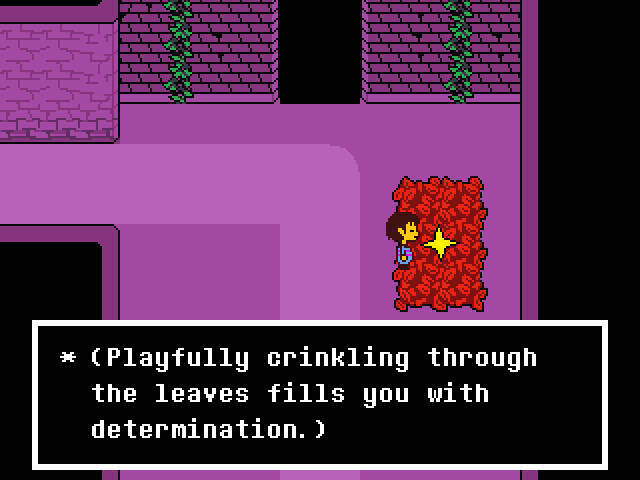
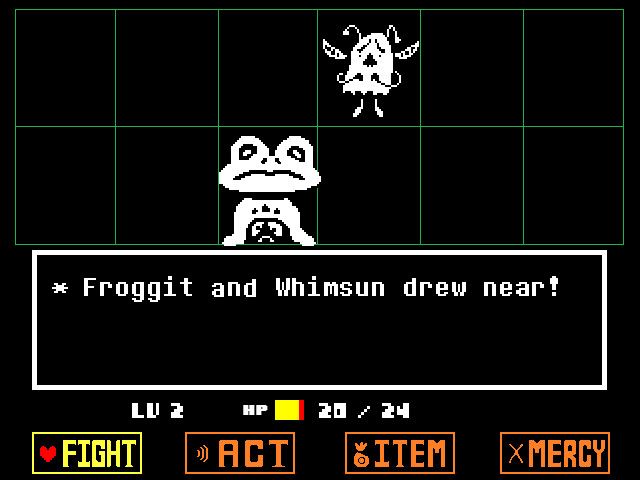

把独立游戏当选题预热：我用 Undertale 搭了一条内容采集工作流
作为独立软件评测博主，每周要产出两三篇选题，但刷列表找灵感越来越同质化。把玩 Undertale 嵌进工作流当预热环节后，选题评判维度和产出质量都有了变化。
旧流程：刷列表找灵感，越刷越审美疲劳
我每周要产出两三篇独立软件评测博客，以前的流程说起来很标准：周一刷 Product Hunt 和 Steam 新品列表圈定五到七个候选，周二逐个试用并记功能笔记，周三整理素材写初稿。表面上每步都有产出，实际执行了两个多月后发现问题——写出来的文章越来越像同一条流水线出来的模板。
评判维度永远是那几条：有没有自动化、导出格式多不多、界面够不够简洁。读者在评论区说"每篇看完都觉得这些软件差不多"，我自己写的时候也常常卡住——对着一款笔记软件和一款项目管理软件，硬想它们"设计哲学上有什么本质不同"，其实根本说不出差异。
卡点很明确：选的是功能层面的差异，底层评判维度没建起来。
新流程：把 Undertale 嵌进灵感预热环节
我把玩独立游戏这件事嵌在了周末的最后一晚，位置就在"正式刷 Product Hunt"之前。这不是摸鱼，而是把游戏体验当灵感预热——用游戏里那些被反复验证过的设计决策，当我评判下一周软件的参照系。
去undertale官网看一眼就知道，它之所以被选中当第一批预热素材，是因为它的几个设计决策非常典型且值得拆解：战斗系统里的杀放自由、弹幕颜色对应的行为指令、三条路线的非线性叙事，每一个点都可以反哺到软件产品的设计评判上。
具体流程是这样的：周末晚上先从undertale下载拿安装包，花两到三小时打 Undertale 一周目，同时开着手机自动截图（游戏里触发关键事件就拍一张）；通关后用飞书笔记的语音转文字功能，边回顾边口述设计洞察，不做结构化整理，想到哪说到哪；然后把这些洞察提炼成软件评判维度，直接套到下周要写的软件上。
实操细节：两个最容易断链的环节
这套流程有两个容易卡壳的地方，我调了两次才顺过来。
第一个断链点在"游戏体验 → 设计洞察"这一步。第一次玩完 Undertale，录了十几张截图，却写不出超过两百字的笔记——玩得爽但说不出好在哪。解决办法是用 Undertale 的几个核心设计点当锚点，每玩完一个游戏就强制对照打钩：一是有没有给玩家非战斗选择的空间（对应软件里用户有没有自主配置的自由度），二是核心规则是否用最少的认知负担让玩家理解（对应软件界面的信息密度设计），三是不同行为有没有带来可感知的后果（对应软件的反馈机制）。
第二个断链点是"设计洞察 → 软件评判"的转换。刚开始直接把游戏设计点搬过来当软件评判标准，套上去很生硬。后来改成"抽象提取再对位"——去undertale文档翻了一下完整规则才搞懂，Undertale 的蓝色攻击要求"静止不动反而安全"，我把它抽象成"反直觉的规则设计"，再对位到软件里就是"有没有提供跟竞品不一样的快捷键逻辑"，这样转换就顺滑了。

Undertale 里那个 Determination 的存档点给了我一个额外的启发：每打一个关键 BOSS 之前自动存档，相当于给流程加了安全网。我在软件评测流程里也加了类似的机制——每写好一篇评测的初稿就自动推送到自己的 Git 仓库，不再等全部写完再一次性保存，中途改歪了可以随时回退到上一个版本。

效果与边界
效果可以量化：以前写一篇评测平均四小时（找选题一小时、试用两小时、写一小时），现在总耗时五小时，但写出来的东西有了独特的评判维度。上个月我用这套流程评测了一款笔记软件，专门写了它的"反直觉快捷键设计"和"用户配置自由度"这两个维度，这两个点是以前不会写到的——审稿通过率从之前的六成升到了九成，读者评论里出现了"终于看到不一样的评测角度"这样的反馈。
这套流程不是什么场景都划算。如果这周要赶急稿、只有两天时间交稿，玩游戏预热这一步就应该砍掉，直接用旧流程顶——毕竟两到三小时的游戏时间在紧急场景下是无法承受的沉没成本。另外，不是所有独立游戏都适合当灵感素材，那些玩法单一、没有设计决策亮点的游戏，玩完也提炼不出什么东西，不如省下时间。
Undertale 给我的最大启发其实是最简单的那句：给玩家杀放自由，结果反而让游戏的叙事深度远超传统 RPG。这个道理放到软件产品里就是——给用户选择权，而不是替用户做决定。这条原则现在已经变成我评测软件时最先会看的一条。
这套流程跑了五周，我把灵感预热环节的笔记单独整理成了一份清单，里面列了每款游戏的核心设计点和对应的软件评判维度。undertale的完整资料和文档内容在GitHub、Gitee、GitCode都有同步，方便换账号继续追踪。下周开始换 Deltarune 当素材，继续往下跑。